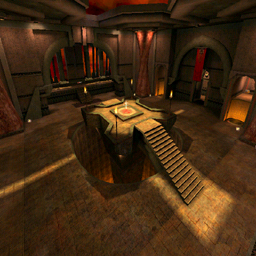

Clan 9 From Outer Space
Clan 9 From Outer Space PlanetQuake Interview
PlanetQuake Interview Custom Maps @ kitty1
Custom Maps @ kitty1 ClanRing Tourney 3 Demos
ClanRing Tourney 3 Demos|  | The MOTW for Sunday 9/10/00 was An Iteration of Hell -ver2 (halctf4b). |
MOTW QUICK LOOK
At first glance, halctf4b seems like a complicated map that will be a real bear to figure out. But actually, it's more like a friendly puppy. Let's take a look at an overhead shot...
I'm going to describe the routes between the center area and the flag room(s), with location entity names in parentheses.
- If you look closely you can see that each side of the center area (Central Atrium) has five accesses. There's a center access (Red/Blue Main Entrance), and a pair of accesses on either side of it. Each pair joins up quickly into a single route, so really there are only three routes from the central area to the flag room: left, right, and center.
- The center route (Red/Blue MegaHealth) splits quickly into a "low road" and, directly overhead, a grated "high road".
- The low road leads to a room (Red/Blue Railgun Room) with two drop-downs at the end. If you take the drop-downs and avoid the jumppads beneath them, voila, you're in the flagroom (Red/Blue Flag Room). If you take those jumppads, they can push you all the way up to the end of the high road.
- The high road leads to a railgun alcove in the room mentioned above. There are several places along the way where you can drop down onto the low road. Or, you could turn left or right to get to one of the side routes. So lets talk about those.
- On the left route (Red North Hall / Blue South Hall), you can either turn aside to hit the high road, or take a spiral stair (Red/Blue Top Spiral) down a long way (Red/Blue Spiral) to a room (Red/Blue Bottom Spiral) that feeds into the left side access for the flagroom.
- On the right route (Red South Hall / Blue North Hall), you can turn onto the high road or else take a stair and a drop over a jumppad (Red/Blue Plasma Hall). You'll end up at the flagroom's right side access.
Not so bad, right?
Item breakdown: The middle powerup chooses randomly between regen, invis, battlesuit, and quad; also, there's a haste under the stairwell of each team's center route. Haste + BS is nasty! Megahealth in each MegaHealth Room, of course, and the only armors (surprisingly, IMO) are 1 YA in each team's Railgun Room. So be sure to sweep up those shards at the middle junction in the "high road", as well as outside the flagroom side accesses. RLs are in the central atrium, plasma and LG in the side routes, and RG in the Railgun Room, natch. Defenders will want to carefully share any RLs "appropriated" from terminated attackers. Ammo and health are spread around evenly. Lastly... drop into the lava under the Plasma Hall and you'll find a nice surprise. You'll only be able to exit this area once every 3-4 minutes, though.

 ) except where indicated otherwise
) except where indicated otherwise